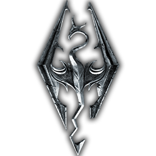

 The Elder Scrolls V: Skyrim
Details
 |
|
| Playtime | Not Played |
| Last Activity | 9/21/2016 18:43:46 |
| Added | 4/24/2025 1:30:35 |
| Modified | 5/2/2025 0:53:10 |
| Completion Status | Not Played |
| Library | Xbox |
| Source | Xbox |
| Platform | Microsoft Xbox 360 |
| Release Date | 11/11/2011 |
| Community Score | 88 |
| Critic Score | 96 |
| User Score | |
| Genre | ARPG Open world |
| Developer | Bethesda Game Studios |
| Publisher | Bethesda Softworks |
| Feature | Controller Support Single Player |
| Links | PCGamingWiki Official site HowLongToBeat IGDB SteamDB StrategyWiki MobyGames Wikipedia WSGF |
| Tag | Creation Engine Direct control Fantasy First-Person Realistic Real-Time Third Person |
Description
The Elder Scrolls V: Skyrim is a 2011 action role-playing game developed by Bethesda Game Studios and published by Bethesda Softworks. It is the fifth main installment in The Elder Scrolls series, following The Elder Scrolls IV: Oblivion (2006), and was released worldwide for Windows, PlayStation 3, and Xbox 360 on November 11, 2011. Skyrim was developed using the Creation Engine, which was rebuilt specifically for the game. The team opted for a unique and more diverse open world than Oblivion's Imperial Province of Cyrodiil, which game director and executive producer Todd Howard considered less interesting by comparison.
The game is set 200 years after the events of Oblivion and takes place in Skyrim, the northernmost province of Tamriel, a continent on the planet Nirn. Its main story focuses on the player character, the Dragonborn, on their quest to defeat Alduin the World-Eater, a dragon prophesied to destroy the world. Throughout the game, the player completes quests and develops the character by improving skills. The game continues the open world tradition of its predecessors by allowing the player to travel to discovered locations in the game world at any time, and to ignore or postpone the main storyline indefinitely.
Upon release, the game received critical acclaim, with praise for its character advancement, world design, visuals, and the ability to dual-wield in combat. Criticism targeted the melee combat, dragon battles, and numerous technical issues present at launch. The game shipped over seven million units within the first week of its release and had sold over 20 million units by June 2013. It is considered one of the greatest video games ever made.
Three downloadable content (DLC) add-ons were released: Dawnguard, Hearthfire and Dragonborn, which were bundled along with the base game into the "Legendary Edition" released in June 2013. A remastered version subtitled Special Edition, containing all three DLC add-ons along with a graphical upgrade, was released in October 2016; a port for the Nintendo Switch was released in November 2017 alongside a separate virtual reality-only version titled Skyrim VR. In addition, the remastered version was bundled with additional Creation Club content and released as the "Anniversary Edition" in 2021–22. A sequel, The Elder Scrolls VI, is currently in development.
Gameplay
The Elder Scrolls V: Skyrim is a fantasy action role-playing game, playable from either a first or third-person perspective. The player may freely roam over the land of Skyrim, an open world environment based on Scandinavia consisting of wilderness expanses, dungeons, caves, cities, towns, fortresses, and villages. Players may navigate the game world more quickly by riding horses, paying for a ride from a city's stable, or utilizing a fast-travel system that allows them to move their character immediately to a previously discovered location.
At the beginning of the game, players select their character's gender and race, with 10 choices for the latter, including races of humans and fantasy races such as elves and orcs. The player chooses the character's appearance; this is not necessarily permanent, however, as an in-game mechanic allows for changing the appearance later. Characters have three primary attributes: health is how much damage the character can take before dying, magicka is depleted to cast spells, and stamina allows the character to perform heavy "power attacks" or sprint. A status bar for each attribute appears onscreen when the attribute falls below its maximum value. Attributes regenerate over time and can be refilled faster by drinking potions, casting regenerative spells, or through various enchantments. Characters gain experience indirectly, via leveling up skills. The 18 skills are divided evenly among the three schools of combat, magic, and stealth. Each skill has its own experience bar, which increases when the character performs an action in-game related to the skill. For example, crafting a dagger increases the Smithing skill, and dealing damage with a bow increases the Archery skill. When a skill's experience bar fills, the skill levels up and the bar is reset. After enough skills level up, the character levels up, enabling the player to increase the maximum value of one of the three attributes and providing a perk point. Perk points can be spent immediately on a skill-specific perk or stored for later use.
Non-player characters (NPCs) populate the world; the player may engage them in conversation (potentially leading to new quests or map locations), marry predetermined ones, or engage them in lethal or nonlethal combat. As in previous games in the series, killing certain individuals can make some quests or items unobtainable. Certain NPCs essential to the narrative cannot be killed by the player and will survive attacks of any magnitude. Committing a crime like murder or theft accrues the player a bounty if the crime is witnessed, leading to confrontations with guards. Depending on some factors, including how serious the crime was, the player can choose to go to jail, pay the guard off, persuade the witness to forget about it, declare that one is a thane of a certain hold (which leads the guard to pardon the player), 'pacify' the guard or silence witnesses through killing them.
NPCs frequently offer the player side-quests; some have parameters adjusted based on nearby unexplored areas. Some NPCs who are befriended or hired by the player may act as companions who will accompany the player and aid them in combat. Some individuals have quests that the player needs to complete in order to gain their services as a companion. The player may choose to join factions, organized groups of NPCs—for example, the Dark Brotherhood, a band of assassins. Each of the factions has an associated quest path to progress through.
The player's effectiveness in combat relies on the use of weapons, armor, and enchantments (which may be bought, found from containers, raided from dead bodies, stolen and/or forged) and on the use of magic spells: similarly, spells are unlocked with spell tomes, which may be may be bought, stolen or found.[failed verification] Weapons, shields, and magic are assigned to each hand allowing for dual-wielding, and can be swapped out through a quick-access menu of favorite items.[failed verification] Some weapons and spells require both hands. Shields can be used to fend off enemy attacks and reduce incurred damage or offensively through bashing attacks. Blunt, bladed, and hacking weapons can be used in close combat and each have specific advantages and roles. Power attacks expend stamina to temporarily stun/stagger an enemy and deal increased damage. Spells have several functions, both in combat (e.g. damaging or confusing enemies, resurrecting dead bodies and conjuring other entities, restoring the player's health and/or stamina) and out (e.g. showing the way to an objective, illuminating a dark room or turning iron into silver). Bows are used for long-range combat and can be used to bash enemies in melee combat. The player can enter sneak mode to pickpocket or deliver powerful sneak attacks to unsuspecting enemies.
When exploring the game world the player may encounter wildlife. Many creatures in the wilderness, such as wolves or bears, are immediately hostile towards the player, while other species are docile and will run away. Skyrim is the first entry in The Elder Scrolls to include dragons in the game's wilderness, although dragons are frequently referenced/mentioned in several of the other games. Like other creatures, dragons are generated randomly in the world and will engage in combat with NPCs, creatures and the player. Some dragons may attack cities and towns when in their proximity. The player character can absorb the souls of dragons in order to use powerful spells called "dragon shouts" or "Thu'um". Each shout contains three words in the language spoken by dragons, and the strength of the shout will vary depending on how many words have been spoken. Some words to shouts can be learned by visiting "word walls" in dungeons or around the wilderness, while other words can be taught by different characters. The words to each shout are unlocked for use by spending the absorbed souls of slain dragons. A regeneration period limits the player's use of shouts in gameplay.
Synopsis
Setting
Skyrim is set 200 years after the events of The Elder Scrolls IV: Oblivion, although it is not a direct sequel. Skyrim is a cold and mountainous region in the north of the continent of Tamriel. It has traditionally been divided into nine administrative sections, called "holds", each governed by a jarl from a larger town. Of these settlements, Solitude, Windhelm, Markarth, Riften, and Whiterun are larger and more powerful. The landscape is littered with forts, camps, and ruins, some of which were built by the now-extinct race of the Dwemer, or Dwarves. The Nords, one of the human races, view Skyrim as their homeland, though members of other races populate Skyrim as well.
Skyrim is a province of the much larger Empire, which comprises most of Tamriel. The Empire has recently fought a war with the elvish Aldmeri Dominion, who believe that they are racially superior to humans. While the conflict, known as the Great War, ended in a military stalemate after a hard-fought battle at the imperial capital, the greatly weakened Empire was forced to sign a humiliating peace treaty called the White-Gold Concordat.
While most of Tamriel worship a religious pantheon of eight deities, the Nords of Skyrim are accustomed to worshiping a ninth god, Talos, the deified Nord general who founded the Empire. The Dominion, led by the intolerant Thalmor sect, rejects this notion and its implication that a man became greater than any elf. They instituted a clause in the Concordat forbidding Talos worship in the Empire. Motivated in part by this condition, Ulfric Stormcloak, the jarl of Windhelm, leads a rebellion against imperial rule, with the holds divided between the two sides.
In the ancient past, dragons ruled over vast swaths of Tamriel. Their hegemony was overthrown when three human warriors threw the dragon ruler, Alduin, forward in time using an Elder Scroll, a powerful and mysterious artifact. When Skyrim begins, the survival of the last dragon, the sage Paarthurnax, is a secret kept by an order of monks called the Greybeards. Within their monastery atop the Throat of the World, Skyrim's highest mountain, the Greybeards dedicate their lives to the Way of the Voice, a discipline for powerful draconic spells called "shouts". Generational warriors are "Dragonborn", able to learn shouts intuitively by absorbing the souls of dead dragons. Ancient prophecy maintains that Alduin will return to consume the world, and a "Last Dragonborn" will defeat him.
The player character is Dragonborn and is typically referred to as such. The Dragonborn can be male or female, from one of ten races. Each of the ten races has, in addition to a bonus for certain skills, a power specific to their race – for example, Nords start with a bonus to several martial skills, and the ability to intimidate enemies for a short period. The player can recruit one NPC at a time as a follower, who can travel and fight alongside the Dragonborn; there are forty-five available followers in the base game, with thirteen more added in the downloadable expansions.
Outside of followers and Alduin (the primary antagonist) NPCs prominent to the plot of Skyrim include Balgruuf, Jarl of Whiterun, a town in the center of Skyrim; Arngeir, the leader of the Greybeards; Delphine and Esbern, two of the last members of the Blades, an order of warriors sworn to help the Dragonborn but nearly wiped out after the Great War; and Paarthurnax, the last surviving dragon and grandmaster of the Greybeards. Also notable are General Tullius and Ulfric, who command the Imperial Legion and Stormcloaks respectively. During the course of the game, the Dragonborn can join and assist either side to gain victory in the civil war. Other factions that the Dragonborn can elect to join include the Companions, a noble order of warriors; the College of Winterhold, an institution dedicated to the mystic arts and magic; the Thieves Guild, a league of burglars who have fallen on hard times; the Dark Brotherhood, a fellowship of assassins; and the Bard's College, a group consisting of bards, poets, writers, and public speakers.
Imperial soldiers have captured Ulfric Stormcloak and are preparing to execute him, along with the player who was caught up in the skirmish and mistakenly believed to be a rebel. Before the player can be executed, Alduin appears, attacking the imperial outpost and thus rescuing the player. The player escapes and warns Jarl Balgruuf of Whiterun of the dragon attack. When another dragon attacks and is slain, the dragon's soul flows into the player character, causing the nearby guards to call them "Dragonborn". The Greybeards summon the Dragonborn to the Throat of the World with a deafening shout, where the Dragonborn begins training in the Way of the Voice.
Delphine, a member of a secret society called the Blades who were known as dragon hunters, intercepts the Dragonborn on a training quest and arranges for the Dragonborn to infiltrate the Thalmor Embassy in Solitude, on the (mistaken) suspicion that the Thalmor are responsible for the dragon attacks. There, they learn that Esbern, a Blades lore master obsessed with the prophecy of Alduin's return, is alive and hiding somewhere in Riften. The Dragonborn rescues Esbern in Riften as Thalmor agents also try to capture him. Esbern leads them to an ancient Blade temple and a massive engraving depicting Alduin's prior defeat. Esbern deciphers that the ancient Nords used a special shout that forces a dragon to land and experience the concept of mortality, thus rendering Alduin and any dragon weaker, unable to fly, and vulnerable.
Arngeir does not know the shout, which is called Dragonrend and violates the Way of the Voice. Arngeir sends the Dragonborn to Paarthurnax at the summit of the Throat. Paarthurnax reveals that no one living knows Dragonrend, but theorizes that the Dragonborn could learn it by looking through time at the throat of the world the site of Alduin's banishment. To do this, the Dragonborn retrieves the Elder Scroll used in the banishment from a massive subterranean Dwemer city. The Dragonborn returns to the summit and learns Dragonrend. Alduin attacks. The Dragonborn uses Dragonrend, and together with Paarthurnax, overpowers Alduin, who flees.
The Dragonborn's allies hatch a plan to capture a dragon at Whiterun. The Dragonborn helps negotiate a truce in the civil war to prevent either side from capturing Whiterun, the Jarl of which has remained neutral in the conflict, during this delicate operation. The captured dragon, Odahviing, questions whether Alduin deserves lordship over dragons. He reveals that Alduin has gone to recover his strength in Sovngarde, the Nord afterlife, where he feeds on the souls of the dead. Since the portal to Sovngarde cannot be reached on foot, Odahviing bargains for his freedom in exchange for flying the Dragonborn there. Entering Sovngarde, the Dragonborn meets the three heroes who had defeated Alduin originally. With their help, the Dragonborn kills Alduin and returns to Skyrim.
Development
Having completed work on Oblivion in 2006, Bethesda Game Studios began work on Fallout 3. It was during this time that the team began planning the next entry in The Elder Scrolls series. From the outset, they had decided to set the new game in the land of Skyrim, incorporating dragons into the main theme of the game. Full development began following the release of Fallout 3 in 2008; the developers considered Skyrim a spiritual successor to both Fallout 3 and previous The Elder Scrolls games. The game was developed by a team of roughly 100 people composed of new talent as well as of the series' veterans. The production was supervised by Todd Howard, who has been the director of several titles released by Bethesda Softworks.
Design
The team set the game in the province of Skyrim, designing it by hand. While similar in size to Oblivion's game world of Cyrodiil, the mountainous topography of the world inflates the game space and makes it more difficult to traverse than Cyrodiil, which was relatively flat. In designing Skyrim's world, the team opted for a different approach to what was taken with Oblivion; art director Matt Carofano considered the "epic-realism" of Skyrim's world design as a departure from Oblivion's generic representation of classic European fantasy lore. Howard expressed the team's desire to re-encapsulate the "wonder of discovery" of Morrowind's game world in Skyrim, as the return to the classic fantasy of Arena and The Elder Scrolls II: Daggerfall in Oblivion meant sacrificing a world with a unique culture. As a way of creating diversity, the team divided the world into nine sectors, known as holds, and attempted to make each hold feel topographically unique from one another; in addition, the team wanted to reflect the socioeconomic background of the NPCs by making some locations elaborate and wealthy while others are poorer and lower-tech.
The team sought to make each of the game's ten races feel unique; Howard considered the player's choice of race at the beginning of the game a more important decision than it had been in previous The Elder Scrolls games because the culture of Skyrim's world contains more racism. However, he reiterated that the player's choice of race does not have major game-affecting consequences as it adds "flavor" to different NPCs' dispositions towards the player, and is not meant as a way of locking players out of particular quests. Efforts to make Skyrim's world feel hand-crafted extended to the team abandoning the use of generated landscapes as they had done in Oblivion. While just one team member was charged with designing dungeons in Oblivion, Skyrim's 150 dungeons were designed by a group of eight people. Skyrim features 244 quests, over 300 points of interest with a map marker and numerous unmarked locations.
Skyrim is powered by Bethesda's Creation Engine, forked from the Fallout 3 codebase specifically for Skyrim. After Fallout 3's release, the team devised numerous design objectives to meet for Skyrim, and according to Howard, the team "got all those done and kept going". Had the team not been able to meet their design goals with seventh generation of video game consoles, they would have waited for the next generation and released Skyrim then, but Howard felt that the technology of the time did not hold the team back at all. The Creation Engine allows for numerous improvements in graphical fidelity over Bethesda's previous efforts. For example, the draw distance renders farther than in previous The Elder Scrolls games; Howard provided an example where the player can stare at a small object such as a fork in detail, and then look up at a mountain and run to the top of it. Dynamic lighting allows shadows to be created by any structure or item in the game world, and the Creation Engine allowed for greater detail in flora production than SpeedTree had in previous Bethesda games. For example, with Bethesda's own technology, developers were able to give weight to the branches of trees, which affects how trees blow in the wind. In addition, the technology allows wind to affect the flow of water in channels such as rivers and streams. Because of the large presence of snow in Skyrim's game world, the technological upgrades were applied to weather effects and allow for dynamic snowfall upon the terrain, instead of snow that was rendered as a textural effect in previous games.
The team used Havok's Behavior toolset for character animation, which allows for a greater fluidity between the character's movements of walking, running and sprinting, and also increases the efficiency of the third-person camera option, which had been criticized in Oblivion. The toolset allows interactions between the player and NPCs to take place in real time; in Oblivion, when the player went to interact with an NPC, time would freeze and the camera would zoom in on the NPC's face. In Skyrim, NPCs can move around and make body gestures while conversing with the player. Children are present in the game, and their presence is handled similarly to Fallout 3 in that they cannot be harmed by the player in any way, since depictions of violence involving children in video games are controversial. Skyrim uses the Radiant AI artificial intelligence system that was created for Oblivion, and it has been updated to allow NPCs to "do what they want under extra parameters". The updated system allows for greater interaction between NPCs and their environments; NPCs can perform tasks such as farming, milling, and mining in the game world, and will react to each other.
The team employed Jeremy Soule to compose the music for Skyrim, who previously worked on Morrowind and Oblivion. The game's main theme "Dragonborn" was recorded with a choir of over 30 people singing in the fictional dragon language. Creative director Todd Howard envisioned the theme for Skyrim as The Elder Scrolls theme sung by a choir of barbarians. This became a reality when the idea was passed by Soule, who recorded the 30-man choir and layered three separate recordings to create the effect of 90 voices. Bethesda's concept artist Adam Adamowicz created the Draconic language, and also developed a 34-character runic alphabet for the game. He expanded the lexicon of Draconic as needed; Bruce Nesmith explained that words were introduced to the lexicon every time that the studio "wanted to say something".
Bethesda released four audio CDs along with the game on November 11, 2011. The soundtrack to Skyrim is sold via Jeremy Soule's distributor DirectSong, and Soule autographed all physical copies ordered via DirectSong. "Day One" pre-orders from Amazon.de also included a five-track promotional Skyrim soundtrack sampler. A digital version of the soundtrack was released via iTunes on January 31, 2013.
The voice-overs in the game included more than 70 actors and over 60,000 lines of dialogue. Casting director and production supervisor Timothy Cubbison worked with Bethesda to evaluate auditions and oversee the recordings. The full cast consisted of three Academy Award nominees (Max von Sydow, Christopher Plummer, and Joan Allen) and several other high-profile actors (including Michael Hogan, Vladimir Kulich, and Lynda Carter).
Marketing and release
Skyrim was announced at the Spike Video Game Awards on December 11, 2010; Howard appeared onstage during the awards and presented the announcement trailer, which introduced the game's story and revealed its "11–11–11" release date. It was the cover story for the February 2011 issue of the Game Informer magazine, wherein journalist Matt Miller wrote a fifteen-page article that revealed the first details about the game's story and gameplay. Asked about downloadable content (DLC) packages in a June 2011 interview, Howard expressed the team's intention to release DLC packages, having done so for previous releases; he revealed that it was the team's goal to release a lower number of DLC packages that were larger in content than those released for Fallout 3, as he felt that releasing a larger number of low-content packages was "chaotic". Via a press release, the team announced that the first two planned DLC packages would release on the Xbox 360 via Xbox Live a month ahead of PCs and the PlayStation 3.
In October 2011, pictures of many pages of the manual of the game were leaked, later followed by footage from the introduction, revealing some more details. By November 1, 2011, a copy of the Xbox 360 version had been leaked and made available through the Internet, allowing those with a hacked Xbox 360 to play Skyrim 10 days before its release. In the Netherlands, the game was made available for purchase on November 7. On November 10, stores in Australia began selling the game ahead of its November 11 release date.
On January 11, 2014, Bethesda partnered with 2K Games to bundle Skyrim with BioShock Infinite on the Xbox 360 and PlayStation 3. The bundle was released on February 11, 2014.
Retail editions
At the 2011 QuakeCon conference, the team unveiled Skyrim's "Collector's Edition" package. Bundled with a copy of the game is a map of the game world, a 12-inch figurine of Alduin, as well as a 200-page concept art book and a DVD feature about the making of Skyrim. A "Premium Edition" package consisting of the base game along with physical extras was released in Europe in October 2012. A "Legendary Edition" was released on June 4, 2013. It contains the version 1.9 patch and the three expansions, along with the main game.
On June 4, 2016, Bethesda announced The Elder Scrolls V: Skyrim – Special Edition, a remaster for the PlayStation 4, Windows, and Xbox One. It was released on October 28, 2016. Windows players who owned the original game and all of its downloadable content on Steam were offered the Special Edition for free. The remastered version contains an upgraded game engine as well as numerous graphical enhancements, along with mod support on consoles. A DRM-free version of the Special Edition was released on GOG on September 29, 2022.
As part of Skyrim's 10th anniversary celebration, a new retail edition titled "Anniversary Edition" was released in November 2021 for Windows, PlayStation 4, PlayStation 5, Xbox One and Xbox Series X/S. It includes the Special Edition, 74 "Creations" from the Creation Club, and introduces the ability to fish and player-owned aquariums. The "Anniversary Edition" was released for the Nintendo Switch on September 29, 2022. A DRM-free version of the "Anniversary Edition" was released on GOG on September 29, 2022. In addition, a DLC pack for the Special Edition that includes the content added in the "Anniversary Edition" became available on Steam and GOG.
At E3 2017, Bethesda announced a PlayStation VR version of Skyrim, titled The Elder Scrolls V: Skyrim VR, for release in November 2017. A standalone VR port of the game was released for Windows on April 2, 2018, supporting the HTC Vive, Oculus Rift, and Windows Mixed Reality headsets.
In October 2016, the reveal trailer for Nintendo Switch featured gameplay of Skyrim on the console. At the time, it was reported that Bethesda only used the game for the reveal trailer and that it was not officially releasing on the Nintendo Switch. On January 13, 2017, Todd Howard confirmed that the game would come out on the Nintendo Switch, making it the first Bethesda title to be released on a Nintendo platform for a Nintendo home console since Home Alone for the NES in 1991. During Bethesda's E3 2017 showcase, it was revealed that the Nintendo Switch version will support Amiibo and the Joy-Con motion controls.
A parody of Skyrim's numerous ports and re-releases, titled Skyrim: Very Special Edition, was released by Bethesda at their E3 2018 press conference for Amazon Alexa, stating it would be also released for the Etch A Sketch, Motorola pagers and Samsung smart refrigerators. The Alexa version was found to be a legitimate version of the game developed by Bethesda, playing off the joke that the studios had seemingly ported Skyrim to all possible platforms following its E3 2017 announcements.
While Skyrim was being ported to next-generation systems, Zen Studios developed a virtual pinball adaptation of the game as part of the Bethesda Pinball collection, which became available as part of Zen Pinball 2, Pinball FX 2 and Pinball FX 3, as well as a standalone free-to-play game for iOS and Android devices. A Skyrim-themed expansion for the digital collectible card game The Elder Scrolls: Legends, titled Heroes of Skyrim, was released on June 29, 2017.
Additional content
Official expansions
Dawnguard was the first downloadable add-on for Skyrim, revolving around a battle between the Dawnguard and Clan Volkihar. The Dawnguard are a band of vampire hunters who rely on the use of crossbow weapons in their pursuit against Clan Volkihar, a family of vampires. Early in Dawnguard's quest line, players must choose which of the two factions to join forces with. Dawnguard adds new content to the game, including weapons, spells, and armor, and expands the abilities afforded to players who choose to become either a vampire or a werewolf. It adds two new areas to explore outside of the mainland of Skyrim: the Soul Cairn (a plane of the realm of Oblivion) and the Forgotten Vale (a secluded glacial valley). Dawnguard released on the Xbox 360 in English-speaking territories on June 26, 2012, and in European countries in mid-July 2012. It was released for Windows on August 2, 2012, via the digital distribution platform Steam. Performance issues on the PlayStation 3 hampered Dawnguard's release on that platform. It was released on the PlayStation 3 on February 26, 2013, in North America, and on February 27, 2013, in Europe.
Hearthfire was Skyrim's second add-on, which allows players to build houses and adopt children. Three plots of land are added to the game world which players can purchase. Once land is purchased, players build a small basic house, then select rooms to add on. The house and its additions are built from raw materials such as lumber and clay, which can be gathered or purchased. Players may adopt up to two children and have them live in the home, along with the player's spouse. Hearthfire was released for the Xbox 360 on September 4, 2012, and for Windows on October 4, 2012. It was later released for PlayStation 3 on February 19, 2013, in North America, and February 20, 2013, in Europe.
Dragonborn is the third and final add-on for Skyrim. It revolves around the player character's efforts to defeat Miraak, the first Dragonborn to become corrupted and seek to control the world. The add-on takes place on Solstheim, an island northeast of Skyrim, belonging to the province of Morrowind, which is presented as an additional open world. It adds content to the game and allows players to ride on the backs of dragons, along with other shouts that can be learned from Solstheim. Dragonborn was released for the Xbox 360 on December 4, 2012, for Windows on February 5, 2013, and for PlayStation 3 on February 12, 2013.
In April 2013, Bethesda announced via their blog that they were "moving on" from Skyrim and preparing to work on other projects. They added that they would only be releasing "minor updates" for the game.
Through Creation Club, 74 small downloadable content packs, termed "Creations", were released for the Special Edition between 2017 and 2021. All 74 Creations were compiled as part of the "Anniversary Edition" in 2021. The 74 Creations were also separately packaged together on Steam and GOG.com as The Elder Scrolls V: Skyrim Anniversary Upgrade, which was sold as a single DLC pack for the Special Edition in 2021. The "Anniversary Edition" was not available as a standalone title on GOG.com until 2022.
A wide variety of official and fan-created mods, short for modifications, are available for Skyrim, which are generally made using the packaged Creation Kit. These mods are distributed freely on file-sharing sites such as Nexus Mods, and are aggregated via the Steam Workshop's controlled content distribution mechanism. The mods may include features such as better game stability, improvements and tweaks of gameplay features, significantly enhanced visuals, overhauled weather systems, new characters and locations, user interface updates, and more.
The first Skyrim modification was The Fall of the Space Core, Vol. 1, created by Bethesda in collaboration with Valve. It causes a fictional device known as the Space Core from Valve's video game Portal 2 to fall from the sky and land where the player can recover it. The Space Core acts as a non-player character voiced by Nolan North which follows the player around the world of Skyrim and dispenses space-related comments.
Enderal: The Shards of Order is a total conversion mod of Skyrim developed by SureAI as a sequel to Nehrim: At Fate's Edge which was developed for Oblivion. It was released in July 2016, initially in German only. An English version was released August 16, 2016. A 2015 mod entitled The Forgotten City was later adapted into a full standalone game and released on PC and consoles in 2021.
Several Skyrim modders were ultimately hired by Bethesda, or other games studios to work on future projects. A notable early example was Alexander J. Velicky, who created the Falskaar mod as a job application for Bethesda. The mod ultimately added a large new landmass with new quests, 25 hours of gameplay, and 29 voice actors for the 54 new NPCs. Velicky was hired by Bungie in late 2013. Emmi Junkkari aka "Elianora", a Finnish mod developer who created a "Breezehome" replacement mod for the Special Edition, was hired in 2023 to work on Starfield as a level artist.
Reception
Critical reception
Skyrim received critical acclaim upon release. The removal of the character class system, present in previous The Elder Scrolls entries, was generally well received by reviewers. Billy Shibley of Machinima's Inside Gaming and Charles Onyett of IGN praised its removal because it allowed players to experiment with different skills without having to make decisions about a class early in the game. John Bedford of Eurogamer stated that by removing the character class system, the game tailored itself to players who wanted to build an all-around character, while still letting other players specialize in a preferred play-style. Steve Butts of The Escapist considered the addition of perks to the character advancement system "a great method to make your character feel even more unique and personal". Kevin VanOrd of GameSpot praised the way perks allowed for the player's preferred skills to become more powerful over time, stating that the perk system "forms around the way you play, but allows for tweaking so that you retain a sense of control". The user interface was also praised by reviewers for its accessibility; Bedford complimented its "elegant design" which succeeded Oblivion's comparatively complex interface.
The art style of the game world drew acclaim from many reviewers, who welcomed the departure from Oblivion's Cyrodiil. Jason Schreier of Wired described the land of Skyrim as a "Viking-inspired treasure trove of flavor and charm", noting its contrast to Cyrodiil, which he considered generic by comparison. The Staff at Edge magazine described Cyrodiil as a "patchwork of varying terrains", praising the more consistent design of Skyrim. Shibley praised "the lack of copy-and-paste level design that's plagued Bethesda's previous games, ... giving a lived-in and handcrafted look to the world". Bedford noted that the improved graphical fidelity over Oblivion allowed the game world to feel more lifelike, praising the "misty mountain setting, complete with swirling fog and high-altitude snowstorms". An editor for PC PowerPlay praised the diversity of the dungeon design. Andrew Reiner of Game Informer cited criticisms that Oblivion faced for repetitive dungeons, noting that "the composition of each dungeon is largely unique and individualized" in Skyrim. He also favored the design choice to have a quick route out of a dungeon leading from its last room, eliminating a problem he identified Oblivion as having, where the player would clear a dungeon and then have to go all the way back to the beginning to exit it. Many reviewers praised the large number of things to do in the world outside of the main story. Tom Francis of PC Gamer noted that it was difficult to explore the world without becoming distracted by things to do, stating that, "it's hard to walk for a minute in any direction without encountering an intriguing cave, a lonely shack, some strange stones, a wandering traveller, [or] a haunted fort".
Reviewers welcomed the ability to dual-wield weapons and magic. An editor for PC PowerPlay felt that the dual-wielding ability "transforms the tactical scope of each combat encounter". Shibley noted that the dual-wielding option gave the player more freedom to experiment with combat, writing that, "the ability to apply a spell to each hand ... generates huge potential for getting creative with your spell combinations". However, reviewers were critical of the melee combat, feeling that it had not been improved upon as much as other areas in the game. Justin McElroy of Joystiq felt that "what should be thrilling fights in Skyrim are often weighed down by the same clunky melee system Oblivion suffered from". Onyett described the melee combat as "flat" and "floaty", and that "many times it feels like you're slicing air instead of a mythical creature's flesh". Francis agreed with this sentiment, stating that, "too much of the time, you wave your weapon around and enemies barely react to the hits".
The game received minor criticism in several other areas. The quality of the main quest divided some reviewers. While Reiner praised the main quest as "superbly penned" and "Bethesda's best effort to date", Butts and Francis criticized the fact that the story was delivered primarily through conversations and quest journals, rather than through the player's own interactions. While the dragon battles were well-received, some reviewers observed flaws in the AI for dragons. Onyett pointed out their "predictable attack patterns", which Francis agreed with, claiming that "fighting them never changes much: you can just ignore them until they land, then shoot them from a distance when they do". Reiner felt that, due to the repetitiveness of their attack patterns, the dragons were not challenging enough for low-level players. Edge pointed out a curve in difficulty for players who favored archery and magic, as dragons were difficult to attack while airborne. Many reviewers noted glitches while playing Skyrim, some game-breaking. Nick Cowen of The Guardian pointed out that the game's glitches were a trade-off for its ambitious scope, and that he had experienced glitches that forced him to reload earlier saves. Edge began their review by criticizing the lack of polish, while still acknowledging many areas in the game that made up for it.
At the launch of Skyrim, many technical issues of varying severity were reported. Some examples include a texture down-scaling issue on the Xbox 360 version when the game was run from the hard drive; crashes, slowdown and frame rate issues on the PlayStation 3 version when save files exceeded 6 MB, commonly occurring due to extended gameplay times; and various crashes and slowdowns on the Windows version. According to Skyrim's director Todd Howard, the notion that bugs were caused by "restrictive RAM" is incorrect. Howard said, "It's literally the things you've done in what order and what's running."
Since its release, several patches have been published to address technical issues and improve overall gameplay. Patch 1.2 was released on November 29, 2011, to fix some of the game's issues; however, some players reported new bugs in the game following the patch, including more frequent game crashes. Patch 1.3 was released on December 7, 2011, to improve stability, further address known issues, and fix some problems that were introduced in version 1.2. Patch 1.4 was released on February 1, 2012, for the PC. Another list of issues and bugs were addressed in this patch, and Skyrim launcher support for Skyrim Workshop (PC) was provided. Patch 1.5 was released on March 20, 2012, for the PC. Numerous bugs were fixed, and new archery/spellcasting kill cams were included. On April 12, 2012, Bethesda announced that Kinect support would be coming for the Xbox 360 version of Skyrim, with over 200 voice commands. Patch 1.6 was released on May 24, 2012, for the PC. This includes a new feature: mounted combat. Patch 1.7 was released on July 30, 2012, for the PC, and 1.8 was released on November 1, 2012, for the PC. These two introduced only minor bugfixes. Patch 1.9 was released on March 18, 2013. In addition to providing various bug fixes, this patch also added new features, most prominently the new "Legendary" difficulty, and "Legendary" skills, which effectively remove the level cap.
An unofficial patch attempts to fix the remaining issues unattended by the official patches. It lists hundreds of gameplay, quest, and other bugs that it fixes in the game and its add-ons.
Within two days after the game's launch, 3.4 million physical units were sold. Of those sales, 59% were for the Xbox 360, 27% for the PS3, and 14% for the PC. In the first week of release, Bethesda stated that 7 million units of the game had been shipped to retailers worldwide, and that total sales through the following Wednesday were expected to generate an estimated US$450 million. By December 2011, this had risen to 10 million units shipped to retail and around US$620 million (~$829 million in 2023) generated. In June 2013, Bethesda announced that over 20 million units of the game had been sold. According to Todd Howard, Skyrim had sold over 30 million units by November 2016. By June 2023, he claimed the game had sold over 60 million units.
During the first day of release, Steam showed over 230,000 people playing Skyrim concurrently. Additionally, Valve stated that it was the fastest selling game to date on their Steam platform. Steam's statistics page showed the client breaking a five million user record by having 5,012,468 users logged in on January 2, 2012. The total number of sold copies on the PC platform is difficult to confirm because Valve does not publicly publish digital sales. Shortly after its release, Skyrim was the most-played game on Steam by a huge margin, with double the number of players as Team Fortress 2, the second-placed game. In the United Kingdom, Skyrim was the 9th best selling title of 2012. Regarding sales on the PC, Todd Howard stated in an interview with Rock, Paper, Shotgun that, "Skyrim did better than we've ever done on PC by a large, large number. And that's where the mods are. That feeds the game for a long time."
Skyrim received awards from numerous gaming sites and publications. IGN and GameSpot named Skyrim "PC Game of the Year". It also received GameSpot's "Readers' Choice" award. The game received the "RPG of the Year" award from Spike TV, IGN, X-Play, GameSpot GameSpy, and the Interactive Achievement Awards. It received "Overall Game of the Year" wins from Spike TV, Giant Bomb, X-Play, Machinima.com, GameSpot, 1UP.com, Game Revolution, GameSpy, Joystiq, and the Interactive Achievement Awards. Along with winning the "Game of the Year" and "Role-Playing/Massively Multiplayer Game of the Year" awards, the Academy of Interactive Arts & Sciences also honored Skyrim with outstanding achievement in "Game Direction", "Gameplay Engineering", and "Story". It was voted No. 1 in Good Game's top 100 video games of all time and No. 1 in PC Gamer's "The 100 Greatest PC Games of All Time". In Giant Bomb's 2017 Game of the Year Awards, the game was a runner-up for "2017's Old Game of the Year".
The VR version was nominated for "Best Virtual Reality Game" at the Gamescom 2017 Awards; for the Coney Island Dreamland Award for Best Virtual Reality Game and the Tappan Zee Bridge Award for Best Remake (along with the Switch version) at the New York Game Awards 2018; for "Excellence in Technical Achievement" and "VR Game of the Year" at the 2018 SXSW Gaming Awards; and for "Best VR/AR Game" at the 2018 Game Developers Choice Awards. At the 17th Annual National Academy of Video Game Trade Reviewers Awards, the VR version was nominated for "Control Design, VR", "Direction in Virtual Reality", and "Sound Mixing in Virtual Reality", while the Switch version was nominated for "Costume Design". The VR version won the award for "Best VR Game" at the 2018 Golden Joystick Awards.
Critics often consider Skyrim among the best video games of all time. Skyrim has been credited by developers as an influence on later games, such as Valheim, The Legend of Zelda: Breath of the Wild, and Avowed. The game has received credit for popularizing large-scale open worlds in fantasy role-playing games, influencing the settings of installations in game series including The Witcher and Dragon Age.
Skyrim spawned a number of noteworthy Internet memes that circulated as image macros or video parodies and achieved viral popularity. These include the dragon shout "Fus Ro Dah", and variations or adaptations of the phrase "I used to be an adventurer like you, then I took an arrow in the knee."
During an interview in 2018, Todd Howard attributed Bethesda's frequent re-releases of the game to the "millions" of people still playing Skyrim.